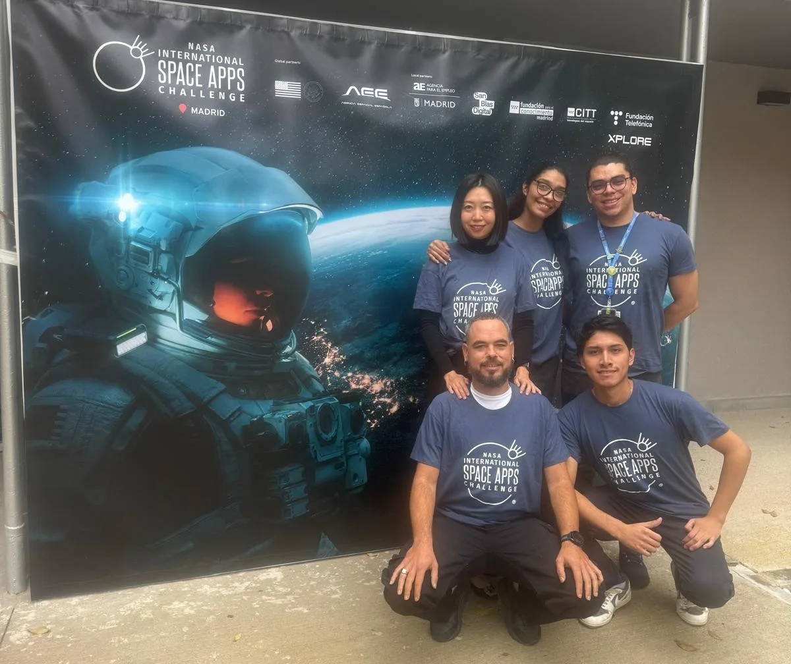

Santa Rosa de Agua · Lake Maracaibo · Venezuela
Añú: the people of the water
Kanuye añu wiin
We are children of the water and of the root that embraces the land. We come from the sea, and our voice resists silence, because high above us Keishi, the Moon, keeps watch: the ancestral eye of space that observes everything.
Here the mangrove holds life and memory.
Guardians: seeing the territory from two skies.
The cultural sky and the technological sky
Jünowa anünnüku - künowa atarü
The team

KATOUWA
Two Skies, One Territory
NASA Space Apps Challenge 2026 · Be an Earth System Trend Detective!
Living architecture at the intersection of two skies: the technological and the cultural. A model that intertwines the alphabet of science with the memory of the Añú people of Maracaibo, in the face of the ecological and cultural collapse of the territory. Space observes from above, while we interpret from within through the lens of Indigenous cognition.
- Anny Patricia Guerra Duarte @anny · Team owner
- Miguel Angel Carpio Cornejo @lord_sack
- Hui Wang @huwang
- Rodrigo Alejandro Aguilar Mejia @rodrigoa
- Guillermo Alonso @guillermoalonso
Project
Two ways of observing the same territory.
Piyomü jümo tamo Kanuyenkar
Summary
KATOUWA is an interactive Earth observation platform that connects satellite science with the territorial knowledge of the Indigenous Añú community in Santa Rosa de Agua, Venezuela. It integrates NASA MODIS, Landsat 8/9 and NASA POWER data to investigate environmental change from 2019 to 2025: it visualizes vegetation indices, temperature and precipitation, applies data-quality checks and statistical trend analysis, and compares individual observation points with a 20-hectare candidate coastal vegetation area. Our original Living Signal turns the measurements into visual patterns and synthesized sound.
Key finding: a statistically significant vegetation trend at one location does not necessarily represent the wider ecosystem.
What we developed
An interactive platform that brings together two complementary perspectives: the technological sky, satellite observations and environmental measurements, and the cultural sky, the knowledge, history and lived experience of the people of the territory. Satellite data is not treated as a complete explanation of change, but as a scientific starting point for deeper understanding and community dialogue.
How the platform works
- NASA MODIS · NDVI and EVI vegetation indices at 250 m.
- Landsat 8/9 · surface reflectance used to calculate NDVI at 30 m, for more detailed coastal vegetation.
- NASA POWER · historical temperature and precipitation from Earth science models and reanalysis.
We analyzed 2019–2025 for two observation points and a manually delineated candidate coastal vegetation area of about 20 ha. The system screens quality, builds annual summaries, visualizes trends and evaluates direction, magnitude and significance with the Mann–Kendall test and Theil–Sen slope. Full-year and fixed-season (May–October) observations are compared to see how seasonal sampling affects interpretation.
Key findings
A trend detected at one point may not represent the wider landscape. Landsat point P1 showed an increasing NDVI trend (+0.020 per year, p = 0.030) that reached the conventional significance threshold, but it is sensitive to removing a single year. The 20 ha candidate area did not reach that threshold (+0.005 per year, p = 0.069), and point P2 shows no trend (p = 0.77).
Over the same years, the community documents oil spills, cyanobacteria blooms, flooding and waste, mostly in the water and along the shore, which NDVI does not measure. We do not claim that these NDVI results prove mangrove recovery or degradation: that would require classification, historical validation and local ecological evidence.
Technology
- Python and Streamlit · interactive analysis application.
- Google Earth Engine and JavaScript · processing and export of Landsat observations.
- Python data analysis (pandas, SciPy, Plotly) · indicators and statistical trends.
- This web experience · HTML, CSS and JavaScript (SVG, Canvas, Web Audio), with satellite imagery and a backend-ready data API.
Creativity: the Living Signal
The Living Signal translates environmental measurements into evolving visual patterns and synthesized sound (220–660 Hz), an alternative way to engage with science beyond charts and tables. The signals are mathematical interpretations of the data, not recordings or representations of Indigenous cultural expressions.
Benefits and intended impact
KATOUWA makes Earth science more understandable, transparent and meaningful for communities, students, researchers and decision-makers, and shows where the available evidence is still insufficient. Our vision is not to replace local knowledge with technology, but to build a bridge between what satellites measure from above and what communities understand through their experience of the territory.
About the challenge
A measured Earth science variable can trend one way in one region and the opposite way in another. The challenge: create a tool that selects variables from Earth science missions or models, visualizes how they change over time, and determines what is changing, where, how much, and whether the change is significant.
Data & Super Intelligence (SI)
NASA data
- NASA MODIS/Terra Vegetation Indices (MOD13Q1 V6.1) · NDVI and EVI, 250 m, 16-day
- NASA NASA POWER · temperature and precipitation, 2019–2025
- NASA Landsat 8 mission
- NASA Landsat 9 mission
Space agency partner & other data
- USGS Landsat 8–9 Collection 2 Level-2 Surface Reflectance
- GEE Google Earth Engine · Landsat 8 and Landsat 9 datasets
- Tools Python · Streamlit · SciPy
- Map Esri World Imagery · satellite base map of the Control Room
- Añú Spelorzi (2007), Universidad Rafael Urdaneta · historical context, not a present-day measurement
- Añú Community chronology of environmental problems in Santa Rosa de Agua (1904–2026) · documentary account, sources to be verified
- Añú Community records · pending consent
Use of Super Intelligence (SI)
- SI Code of this web experience written with the assistance of Claude (Anthropic)
- SI Background image (water, mangrove and moon) generated with Google Gemini